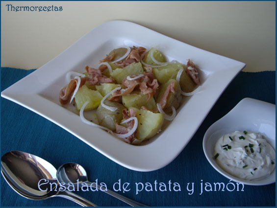

Categorías
- Fáciles
- Guarnición
- Halloween
- Intolerantes al Huevo
- Intolerantes a lactosa
- Legumbres
- Marisco
Ensalada de patata y jamón
Publicado por Mayra Fernández Joglar|05.05.2019
En casa somos apasionados del jamón serrano, así que cuando veo recetas con este ingrediente ya sé, por adelantado, que nos van a gustar. La verdad es que esta ensalada de patatas y jamón se complementa muy bien ya que ese exceso de sal del jamón frito queda anulado con el sabor suave de las patatas cocidas. Por eso a la hora de preparar las patatas lo haremos sólo con agua, así se evita que el plato quede salado.
INGREDIENTES: (Para 2 personas)
- 300 g de patatas pequeñas nuevas
- 100 g de jamón serrano
- 1 diente de ajo
- 1 cebolla fresca
- 50 g queso fresco
- cebollino
- Aceite de oliva para aliñar
- Pimienta